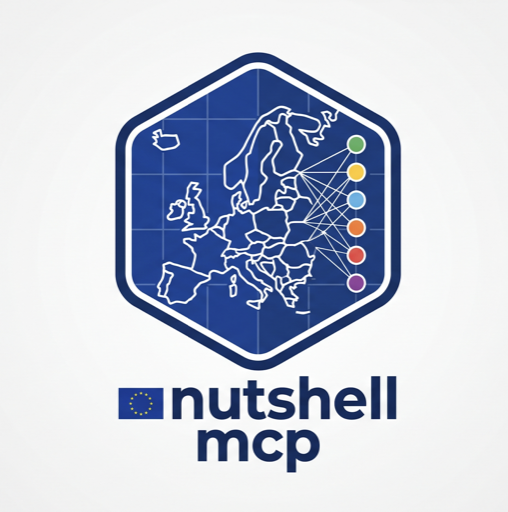

Interrogez votre assistant IA sur n’importe quelle région européenne et obtenez des réponses sourcées.
nutshell-mcp est un serveur MCP qui réunit Eurostat, Copernicus et OpenStreetMap sur un grain unique — zone × indicateur × période. Votre assistant compare des régions, croise les sources et indique la fiabilité de chaque chiffre, sans jamais écrire de requête.
Cette instance est fournie uniquement pour démonstration et évaluation — aucune garantie de disponibilité, de fraîcheur ni de performance, aucune authentification, et elle peut être réinitialisée ou arrêtée à tout moment. Ne bâtissez pas de service opérationnel dessus. Pour tout usage réel, clonez le code et faites tourner votre propre installation.
Ce que votre assistant peut en faire
Trois familles de sources, un seul tableau. Chaque valeur porte son drapeau de qualité et sa provenance.
Statistiques officielles
PIB, chômage, population, structure par âge… du NUTS 0 au NUTS 2, plus le catalogue complet de 10 301 datasets à leur grain natif.
Ce qu'il y a sur le terrain
Hôpitaux, écoles, gares comptés par région et par ville, dans 38 pays européens.
Observation de la Terre
Rasters climatiques et d'occupation du sol convertis en statistiques régionales. Sur cette démo : température de surface estivale 2022–2024 pour 2 300 régions et villes d'Europe continentale (estimation échantillonnée).
7 tools simples
Schémas étroits, sorties bornées, erreurs qui suggèrent la correction. Fonctionne avec un modèle local de 27B, pas seulement avec les modèles de pointe.
Une question, plusieurs sources
Un vrai prompt, et un extrait de la réponse obtenue.
search_indicators→
list_zones→
get_indicators→
search_datasets→
query_data
| # | Région (NUTS2) | Dépendance 65+ | Lits / 100k | PIB / hab. |
|---|---|---|---|---|
| 1 | Brabant wallon (BE31) | 33,4 % | 225,3 | 69 500 € |
| 2 | Poitou-Charentes (FRI3) | 47,3 % | 492,9 | 34 900 € |
| 3 | Vlaams-Brabant (BE24) | 32,5 % | 377,4 | 57 100 € |
| 4 | Basse-Normandie (FRD1) | 44,3 % | 557,2 | 34 600 € |
| 5 | Corse (FRM0) | 43,2 % | 552,0 | 37 500 € |
Le tableau est la partie facile. Comme chaque valeur porte son drapeau de qualité, l’assistant a aussi précisé :
- Les nombres de lits belges sont marqués
d(définition différente) : la comparaison France/Belgique est indicative, et les rangs 1 et 3 sont belges. - OpenStreetMap ne recense aucun hôpital dans les départements d’outre-mer : un défaut de complétude, ils ont donc été exclus plutôt que classés.
- Le Luxembourg n’a pas de données sur les lits : « un trou dans les données, pas une mauvaise note ».
- Les valeurs 2025 marquées
[p]sont provisoires.
Plus d’exemples de prompts et des enchaînements de tools qu’ils déclenchent →
Croiser les trois sources
Certaines questions exigent trois regards à la fois sur un territoire : qui y vit (Eurostat), quel est le milieu (Copernicus) et de quoi dispose-t-on (OpenStreetMap). Deux vrais runs avec Qwen3.8-27B, chiffres vérifiés contre les données du serveur.
Canicules et personnes âgées
« Parmi les provinces d'Espagne et d'Italie, lesquelles cumulent les étés les plus chauds, la population la plus âgée et le moins d'hôpitaux pour 100 000 habitants ? »
| # | Province | 65+ / 15–64 | Hôpitaux | Pour 100k |
|---|---|---|---|---|
| 1 | Asti (ITC17) | 45,2 % | 2 | 0,97 |
| 2 | Lecce (ITF45) | 42,6 % | 18 | 2,35 |
| 3 | Terni (ITI22) | 48,0 % | 4 | 1,86 |
L'assistant a jugé les comptages d'hôpitaux OSM « le maillon faible » et présenté son top 10 comme « une liste indicative, pas un ordre précis ».
Déménager avec de jeunes enfants
« Allemagne ou Autriche : étés doux, faible chômage, le plus d'écoles et de gares possible rapporté à la population. »
| # | Région | Été | Chômage | Écoles / 1 000 |
|---|---|---|---|---|
| 1 | Oberösterreich | 19,7 °C | 3,8 % | 0,64 |
| 2 | Steiermark | 18,4 °C | 4,4 % | 0,61 |
| 3 | Lüneburg | 18,7 °C | 2,7 % | 0,49 |
Un seul appel, 5 indicateurs issus de 3 sources sur 45 régions. L'assistant a aussi listé ce que les données ne disent pas : places en crèche, coût du logement, fréquence des trains.
Connectez votre assistant
Tout client qui parle MCP en HTTP : Claude Desktop, Claude Code, Cursor, pi, et d’autres.
Ajouter le serveur
Plugin Claude Code : deux commandes, rien d’autre à installer.
/plugin marketplace add scampion/nutshell-mcp /plugin install nutshell@nutshell
Tout autre client MCP : endpoint https://nutshell.scamp.fr/mcp (HTTP streamable, sans clé).
{
"mcpServers": {
"nutshell": {
"type": "http",
"url": "https://nutshell.scamp.fr/mcp"
}
}
}
Claude Code sans le plugin : claude mcp add --transport http nutshell https://nutshell.scamp.fr/mcp
Posez une question sur des territoires
« Compare le chômage et l’âge médian en Île-de-France, Oberbayern et Lombardia. » L’assistant trouve les indicateurs et les codes de zone, puis renvoie un seul tableau.
Demandez les sources
Ajoutez « précise la fiabilité de chaque source » : c’est ce qui pousse l’assistant à raisonner sur les valeurs provisoires, les changements de définition et les lacunes de couverture.
Faire tourner votre propre instance
Recommandé pour tout usage réel. Le serveur est sans état et sert tout depuis le disque local : une fois synchronisé, il fonctionne entièrement hors ligne, et vous choisissez les indicateurs, les pays et la cadence de rafraîchissement.
git clone https://github.com/scampion/nutshell-mcp.git cd nutshell-mcp uv venv --python 3.12 .venv uv pip install --python .venv/bin/python -e . .venv/bin/python -m nutshell_mcp.sync --source geo # géométries NUTS & villes .venv/bin/python -m nutshell_mcp.sync --source eurostat # indicateurs du registre .venv/bin/python -m nutshell_mcp.server # serveur MCP stdio
Ajouter un indicateur = un fichier YAML, sans code. Les pipelines OSM et Copernicus, le déploiement HTTP et la configuration sont décrits dans le README (English version).